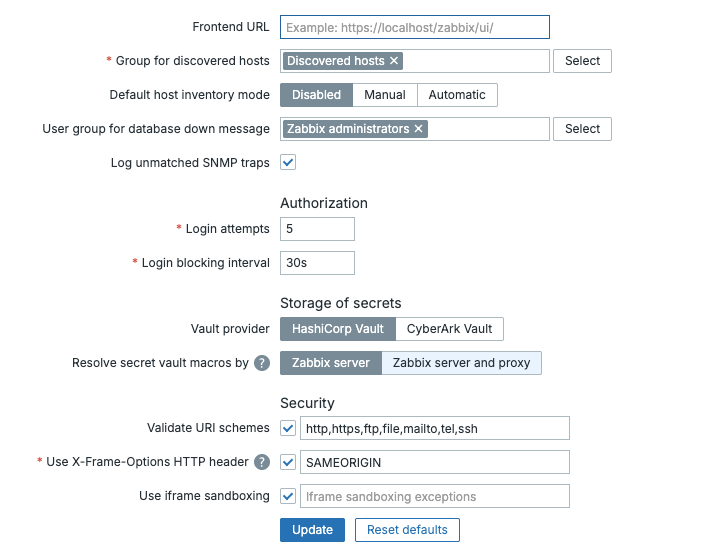
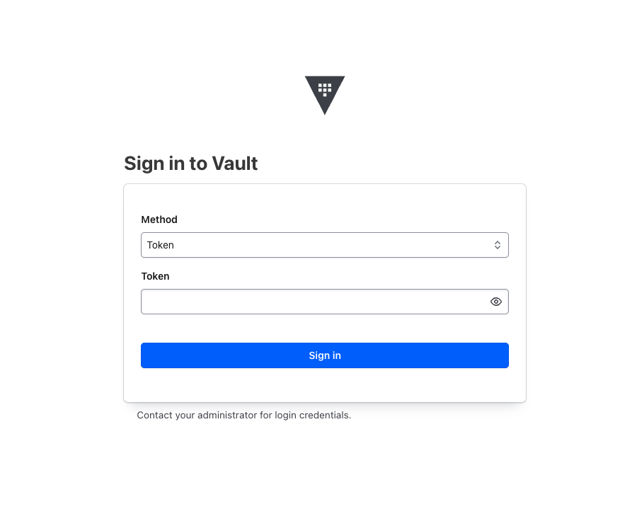

Secrets Management in Zabbix with HashiCorp Vault
Why Use a Secrets Manager?
In most monitoring environments, credentials are inevitably spread across many places: SNMP community strings, SSH private keys, database passwords, API tokens, and WMI credentials all need to reach the monitoring system somehow. Without a dedicated secrets manager, these credentials are typically stored in one or more of the following ways:
- Plaintext in configuration files: readable by anyone with file system access, often forgotten in backups or version control.
- Hardcoded in templates or host macros : while Zabbix's built-in Secret text macro type masks the value in the UI and omits it from template exports, the value is still stored in the Zabbix database in plaintext. Anyone with direct database access can read every credential without any additional barrier.
- Plaintext storage in the Zabbix database: all macro values, including those
marked as Secret text, are stored unencrypted in the
globalmacroandhostmacrotables. A compromised database exposes every credential in full. - Shared over email or chat: no audit trail, no expiry, no revocation.
This approach creates significant operational and security risks:
| Risk | Description |
|---|---|
| Credential sprawl | The same password exists in dozens of config files across multiple servers. |
| No rotation workflow | Changing a credential requires hunting down every place it is used. |
| No audit trail | There is no log of who accessed a secret and when. |
| Breach blast radius | A compromised monitoring server exposes all monitored system credentials. |
| Compliance failures | Regulations like ISO 27001, SOC 2, PCI-DSS, and NIS2 require controlled access to credentials. |
Enter Secrets Managers
Solutions like HashiCorp Vault and CyberArk Conjur solve these problems by providing a centralised, encrypted secrets store with:
- Dynamic secrets: credentials generated on demand with short TTLs, automatically revoked after use.
- Fine-grained access policies: each application or service receives only the secrets it needs.
- Full audit logging: every secret access is recorded with timestamp, identity, and path.
- Token and lease management: Vault auth tokens have configurable TTLs and are automatically expired, reducing the window of exposure if a token is compromised. Dynamic secrets (where supported) are generated on demand and automatically revoked after use.
- Encryption at rest and in transit: secrets never touch disk in plaintext.
Zabbix 6.4 and later supports native integration with HashiCorp Vault, allowing macros to reference secrets stored in Vault rather than holding the secret value directly. This keeps plaintext credentials out of the Zabbix database entirely.
HashiCorp Vault Overview
HashiCorp Vault is an open-source (with a BSL licence from 1.13.13+) secrets management tool. It provides:
- A KV (Key/Value) secrets engine: for storing static secrets.
- An audit backend: for logging all secret access.
- Authentication methods: (AppRole, Token, LDAP, Kubernetes, AWS IAM, etc.).
- A RESTful API and CLI for interaction.
Zabbix uses Vault's KV v2 secrets engine via the HTTP API, authenticating with a Vault token. Zabbix only supports token-based authentication — there is no native support for AppRole as a config parameter. AppRole can however be used to obtain a scoped token which is then passed to Zabbix.
Installing and Configuring Vault on RHEL
This section covers a minimal production-ready Vault installation on Red Hat Enterprise Linux 8/9/10 (or compatible distributions such as AlmaLinux, Rocky Linux).
Add the HashiCorp Repository
sudo dnf install -y dnf-plugins-core
sudo dnf config-manager --add-repo https://rpm.releases.hashicorp.com/RHEL/hashicorp.repo
sudo dnf install -y vault
Configure Vault
Create or edit /etc/vault.d/vault.hcl. The example below uses a file-based storage
backend and enables TLS:
ui = true
storage "file" {
path = "/opt/vault/data"
}
listener "tcp" {
address = "0.0.0.0:8200"
tls_cert_file = "/etc/vault.d/tls/vault.crt"
tls_key_file = "/etc/vault.d/tls/vault.key"
}
api_addr = "https://vault.example.com:8200"
cluster_addr = "https://vault.example.com:8201"
Note
For a development or lab environment, set tls_disable = 1 inside the listener
"tcp" block and use http:// addresses. Never disable TLS in production.
Create the Data Directory and Set Permissions
Enable and Start the Vault Service
Initialise Vault
Vault must be initialised once. This generates unseal keys and an initial root token.
export VAULT_ADDR='https://vault.example.com:8200'
vault operator init -key-shares=5 -key-threshold=3
Save the 5 unseal keys and the initial root token securely. You need at least 3 keys to unseal Vault after every restart.
Unseal Vault
Authenticate as Root
Configuring Vault for Zabbix
Enable the KV Secrets Engine
Enable the KV v2 secrets engine on the zabbix/ mount point:
Note: If you previously enabled a KV v1 engine on this path, disable it first. This permanently deletes all secrets stored under that mount:
Store Zabbix Secrets
Create separate secrets for the Zabbix frontend and the Zabbix server database connections:
# Credentials for the Zabbix frontend database connection
vault kv put zabbix/frontend username=<db_user> password=<db_password>
# Credentials for the Zabbix server database connection
vault kv put zabbix/server username=<db_user> password=<db_password>
Verify the secrets were stored correctly:
Create Vault Policies
Rather than granting access per individual secret path, organise secrets by function
under a monitoring/ prefix. This way the Zabbix server policy covers all monitoring
credentials in one rule. No policy changes needed when adding new secrets.
Recommended secret structure:
| Path | Purpose | Read by |
|---|---|---|
zabbix/server |
Zabbix server DB credentials | zabbix-server |
zabbix/frontend |
Zabbix frontend DB credentials | zabbix-frontend |
zabbix/monitoring/snmp |
SNMP community strings | zabbix-server |
zabbix/monitoring/ssh |
SSH credentials | zabbix-server |
zabbix/monitoring/windows |
WMI credentials | zabbix-server |
First create the policies directory:
Server policy — create /etc/vault.d/policies/zabbix-server-policy.hcl:
# Zabbix server database credentials
path "zabbix/data/server" {
capabilities = ["read", "list"]
}
# All monitoring secrets — covers any secret added under zabbix/monitoring/
path "zabbix/data/monitoring/*" {
capabilities = ["read", "list"]
}
# Allow listing the mount point so secrets are visible in the Vault UI
path "zabbix/metadata/" {
capabilities = ["list"]
}
path "zabbix/metadata/server" {
capabilities = ["read", "list"]
}
path "zabbix/metadata/monitoring/*" {
capabilities = ["read", "list"]
}
Frontend policy — create /etc/vault.d/policies/zabbix-frontend-policy.hcl:
# Zabbix frontend database credentials only
path "zabbix/data/frontend" {
capabilities = ["read", "list"]
}
# Allow listing the mount point so the secret is visible in the Vault UI
path "zabbix/metadata/" {
capabilities = ["list"]
}
path "zabbix/metadata/frontend" {
capabilities = ["read", "list"]
}
Write both policies to Vault:
vault policy write zabbix-server /etc/vault.d/policies/zabbix-server-policy.hcl
vault policy write zabbix-frontend /etc/vault.d/policies/zabbix-frontend-policy.hcl
Vault and Zabbix Proxies
In a distributed Zabbix setup with proxies, each proxy runs its own
zabbix_proxy.conf which supports the same Vault parameters as the server
(VaultURL, VaultToken, VaultDBPath). You have two options:
Option 1 — Single centralised Vault instance
All proxies connect to the same Vault server. Each proxy gets its own scoped token and policy, limiting access to only the secrets relevant to the hosts it monitors. Organise secrets per proxy under the
monitoring/prefix:
Path Purpose Read by zabbix/monitoring/proxy-brussels/*Secrets for Brussels proxy token-proxy-brussels zabbix/monitoring/proxy-amsterdam/*Secrets for Amsterdam proxy token-proxy-amsterdam This is the simplest setup to manage — one Vault to maintain, with access controlled per proxy through policies.
Option 2 — Vault instance per proxy Each proxy site runs its own Vault instance. The proxy connects to its local Vault, which only contains secrets for the hosts that proxy monitors. This approach improves resilience (a Vault outage only affects one proxy) and keeps sensitive credentials fully local to each site — useful when proxies are deployed in remote locations or different security zones.
In both options, a compromised proxy token only exposes the secrets for that proxy's hosts, not the entire monitoring infrastructure. The choice between the two depends on your network topology, resilience requirements, and how many proxies you operate.
Note
Since Zabbix 7.4 it is possible to choose how to resolve secret vault macros
under Administration => General => Others we have the option Resolve secret vault macros by.
- Zabbix server - secrets are retrieved by Zabbix server and forwarded to proxies when needed (default);
- Zabbix server and proxy - secrets are retrieved by both Zabbix server and proxies, allowing them to resolve macros independently.

ch13 Resolve secret vault macro by
Create a Token Role with Renewal Period
Create a token role that allows tokens to be renewed for up to 30 days (720 hours). This role covers both the frontend and server policies:
vault write auth/token/roles/zabbix \
allowed_policies="zabbix-frontend,zabbix-server" \
period="720h"
Create Tokens for Frontend and Server
Note
Since Zabbix 7.0.5, the Zabbix server and proxy can automatically renew renewable service
tokens and periodic service tokens. This means you no longer need a cron job or manual
renewal process for long-running deployments. Periodic tokens are a strong fit here, Vault can
renew them indefinitely unless an explicit explicit_max_ttl is imposed. The token role
created in previous section period="720h" which produces periodic tokens that Zabbix will
renew automatically. However, these tokens are not truly non-expiring, but can be renewed
indefinitely as long as Zabbix is running and the token has no explicit maximum TTL. Vault's
default max_lease_ttl, commonly 32 days, does not cap periodic tokens unless explicit_max_ttl
is configured.
- If you only set period=720h → you’re fine, no 32-day limit
- If explicit_max_ttl is set → the token will expire when that explicit maximum TTL is reached.
Create a separate token for each component using the role created in previous section The
-type=service flag explicitly creates a renewable service token:
# Token for the Zabbix frontend
vault token create \
-policy=zabbix-frontend \
-role=zabbix \
-type=service \
-display-name="zabbix-frontend"
# Token for the Zabbix server
vault token create \
-policy=zabbix-server \
-role=zabbix \
-type=service \
-display-name="zabbix-server"
The output includes a token_renewable true field confirming the token can be renewed.
Note
Note the token value from each output, you will use them in the following configuration
files.
Verify each token can access its respective secret:
# Test the frontend token
VAULT_TOKEN=<frontend-token> vault kv get zabbix/frontend
# Test the server token
VAULT_TOKEN=<server-token> vault kv get zabbix/server
Open the Firewall
Allow the Zabbix server and frontend host to reach Vault on port 8200:
Allow SELinux Network Connections
If SELinux is enforcing, allow the web server to make outbound network connections so the frontend can reach Vault:
Verify Connectivity with curl
Before configuring Zabbix, confirm that the Vault API is reachable and the tokens work as expected:
# Verify frontend token
curl -H "X-Vault-Token: <frontend-token>" \
https://vault.example.com:8200/v1/zabbix/data/frontend
# Verify server token
curl -H "X-Vault-Token: <server-token>" \
https://vault.example.com:8200/v1/zabbix/data/server
A successful response returns a JSON object containing the username and password
fields under data.data.
Configuring the Zabbix Server for Vault
Understanding VaultDBPath and VaultPrefix
Two parameters in zabbix_server.conf control how the server interacts with Vault:
VaultDBPath: Used exclusively for retrieving the Zabbix database credentials (DBUserandDBPassword). Zabbix reads exactly two hardcoded keys from this path:usernameandpassword. It cannot be used together withDBUserorDBPasswordin the same config file.
VaultPrefix: The URL prefix used for all Vault API requests. With KV v2 and thezabbix/mount point the correct prefix is/v1/zabbix/data/. If left unset, Zabbix appends/data/automatically after the mount point, but setting it explicitly avoids ambiguity.
| Parameter | Purpose | Keys used |
|---|---|---|
VaultDBPath |
Zabbix database credentials only | username, password (hardcoded) |
VaultPrefix |
URL prefix for all Vault API calls | n/a — affects path construction |
Note
on /v1/ in paths: The /v1/ prefix in Vault API URLs refers to the Vault
HTTP API version**, not the KV engine version. It is always /v1/ regardless
of whether you use KV v1 or KV v2. So /v1/zabbix/data/server is correct even
though we enabled KV v2.
Edit zabbix_server.conf
Open /etc/zabbix/zabbix_server.conf. Remove the existing DBUser and DBPassword
parameters and add the Vault configuration:
# Remove these lines:
# DBUser=<db_user>
# DBPassword=<db_password>
### HashiCorp Vault configuration ###
# Vault server URL
VaultURL=https://vault.example.com:8200
# Path to the secret containing the Zabbix database credentials.
# Zabbix reads the 'username' and 'password' keys from this path.
# The full path including the mount point is required.
# This resolves to: /v1/zabbix/data/server
VaultDBPath=zabbix/server
# Vault token for the Zabbix server
VaultToken=<zabbix-server token>
Note
VaultDBPath requires the full path including the mount point: zabbix/server.
This resolves to /v1/zabbix/data/server the path where the server credentials
were stored.
TLS Certificate Verification
If Vault uses a certificate signed by an internal CA, configure the Zabbix server to trust it:
If Vault uses a publicly trusted certificate, this parameter is not required.
Restart the Zabbix Server
Check the log for a successful start. If the Vault token or path is incorrect, the server will log an error and fail to start.
Configuring the Zabbix Frontend for Vault
Edit zabbix.conf.php
Open /etc/zabbix/web/zabbix.conf.php. Remove the existing $DB['USER'] and
$DB['PASSWORD'] parameters and add the Vault configuration:
// Remove these lines:
// $DB['USER'] = '<db_user>';
// $DB['PASSWORD'] = '<db_password>';
// Vault configuration
$DB['VAULT'] = 'HashiCorp';
$DB['VAULT_URL'] = 'https://vault.example.com:8200';
$DB['VAULT_DB_PATH'] = 'zabbix/frontend';
$DB['VAULT_TOKEN'] = '<zabbix-frontend token>';
// TLS — only required if using a custom CA
// $DB['VAULT_CACERT'] = '/etc/zabbix/ssl/vault-ca.pem';
Note
Both $DB['VAULT_DB_PATH'] and VaultDBPath in zabbix_server.conf
require the full path including the mount point. zabbix/frontend resolves
to /v1/zabbix/data/frontend.
Secure the Configuration File
The zabbix.conf.php file now contains a Vault token. Ensure it is only readable
by the web server process:
sudo chown apache:apache /etc/zabbix/web/zabbix.conf.php
sudo chmod 600 /etc/zabbix/web/zabbix.conf.php
Note
PHP reads zabbix.conf.php at runtime on each request — no web server restart
is needed after editing it.
Using Vault Secrets as Macros in Zabbix
Once both the server and frontend are configured, you can reference Vault secrets
in Zabbix macros. In our current setup, Vault holds the database credentials for
the frontend (zabbix/frontend) and the server (zabbix/server). These are used
automatically by Zabbix at startup and are not referenced as macros.
To use Vault for additional secrets — such as SNMP community strings, SSH passwords, or API tokens — you need to:
- Store the secret in Vault under the
zabbix/mount point. - Create a policy granting the Zabbix server token read access to that path.
- Create a macro of type Vault secret in Zabbix referencing that path.
Macro Syntax
When the macro type is set to Vault secret, the value field uses the following format:
| Component | Description |
|---|---|
<path> |
Full path to the secret including the mount point, e.g., zabbix/snmp. |
<key> |
The field name within the secret, e.g., community. |
Info
The vault: prefix is not used when the macro type is set to Vault secret,
Zabbix already knows to look in Vault based on the type.
Example: SNMP Community String
This example walks through the full process of adding a monitoring secret to Vault
and using it as a Zabbix macro. Because the server policy already covers
zabbix/data/monitoring/*, no policy changes are needed, just add the secret and
create the macro.
Step 1 — Store the secret in Vault:
Writing secrets requires the root token. Switch to root, write the secret, then switch back:
# Switch to root token to write the secret
vault login <root-token>
vault kv put zabbix/monitoring/snmp community="public_prod_string"
# Verify the secret was written
vault kv get zabbix/monitoring/snmp
# Switch back to the zabbix-server token
vault login <zabbix-server-token>
# Verify the server token can read it
vault kv get zabbix/monitoring/snmp
Note
The Zabbix server reads monitoring secrets, not the frontend. The frontend
token only has access to zabbix/frontend.
Step 2 — Create the macro in Zabbix:
Navigate to Administration → Macros and create:
| Field | Value |
|---|---|
| Macro | {$SNMP_COMMUNITY} |
| Value | zabbix/monitoring/snmp:community |
| Type | Vault secret |
| Description | SNMP community string from Vault |
Step 3 — Reload secrets:
Check the log to confirm the secret was retrieved successfully. Any new secret
added under zabbix/monitoring/ follows the same process, no policy updates required.
How Resolution Works
When the Zabbix server needs to use a macro value of type Vault secret:
- It reads the macro value, e.g.
zabbix/monitoring/snmp:community. - It splits the value on
:— the left part is the path, the right part is the key. - It constructs the Vault API URL:
{VaultURL}/v1/{path}/data→https://vault_url:8200/v1/zabbix/data/monitoring/snmp. - It authenticates using the configured
VaultToken. - It retrieves the JSON response and extracts the value of
communityusing thezabbix-servertoken. - The resolved plaintext value is used in the check — it is never stored in the Zabbix database.
Info
The macro value stored in the Zabbix database is always the <path>:<key>
reference string, not the actual secret. Database exports, backups, and UI
views never expose the real credential.
TLS Configuration
For production use, all communication between Zabbix and Vault must be TLS-encrypted.
Using a Custom CA Certificate
If your Vault instance uses a certificate signed by an internal Certificate Authority:
Zabbix Server (zabbix_server.conf):
Zabbix Frontend (zabbix.conf.php):
Client Certificate Authentication (mTLS)
Zabbix does not currently support client certificates for Vault authentication natively. Use AppRole authentication as the recommended alternative for strong mutual authentication.
Verifying TLS Connectivity
Test Vault connectivity from the Zabbix server host before restarting the service:
curl --cacert /etc/zabbix/ssl/vault-ca.pem \
-H "X-Vault-Token: <your-token>" \
https://vault.example.com:8200/v1/zabbix/data/monitoring/snmp
A successful response looks like:
Verifying the Integration
Once Vault and Zabbix are configured, use the steps below to confirm that the integration is working end to end, from Vault connectivity through to macro resolution in an actual check.
Reload Secrets from Vault
The Zabbix server caches secret values after startup. When you add or update a secret in Vault, you can force the server to reload all secrets without a full restart using the runtime control option:
This sends a signal to the running Zabbix server process instructing it to re-fetch all macros that reference Vault. Use this command whenever you:
- Add a new Vault secret macro to a host, template, or globally.
- Update a secret value in Vault.
- Rotate a Vault token or AppRole secret ID in
zabbix_server.conf.
Verify Connectivity in the Server Log
Immediately after running secrets_reload, tail the Zabbix server log and look
for confirmation or errors:
A successful reload produces output similar to:
zabbix_server [12345]: DEBUG: vault secrets reload started
zabbix_server [12345]: DEBUG: successfully retrieved secret: zabbix/monitoring/snmp
zabbix_server [12345]: DEBUG: successfully retrieved secret: zabbix/monitoring/ssh
zabbix_server [12345]: DEBUG: vault secrets reload completed
If you see failed to retrieve secret or 403 Forbidden, refer to the Troubleshooting
section.
Verify Macro Resolution in the Frontend
The Zabbix frontend independently fetches secrets from Vault for display purposes. To verify it is working:
- Navigate to Administration → Macros (for a global macro) or open a host and go to the Macros tab.
- Find a macro of type Vault secret, for example
{$SNMP_COMMUNITY}. - Click the eye icon next to the macro value.
- If the frontend can reach Vault and the token/AppRole is valid, the resolved plaintext value is shown momentarily.
If the eye icon shows an error or the value does not resolve, check the web server error log:
# Apache
sudo tail -f /var/log/httpd/error_log | grep -i vault
# Nginx
sudo tail -f /var/log/nginx/error.log | grep -i vault
Verify a Secret Reaches an Actual Check
The most definitive test is confirming a Vault-backed macro is used successfully in a real monitoring item.
Example: test SNMP connectivity using the Vault-backed community string
- Create a simple SNMP item on a host (e.g.,
sysDescrOID1.3.6.1.2.1.1.1.0). - Set the SNMP community field to
{$SNMP_COMMUNITY}, which resolves fromzabbix/snmp:community. - Navigate to Monitoring → Latest data and filter for the host.
- If the item returns a value, the secret was successfully retrieved from Vault and used in the check.
- If the item shows an authentication error specifically, the macro likely did
not resolve — trigger a
secrets_reloadand recheck the log.
Example: verify using the Get Value button
For quicker feedback without waiting for the poller:
- Open the item configuration.
- Click Test → Get value.
- Check whether the item returns data or an authentication error.
Confirm No Plaintext in the Zabbix Database
To confirm that Vault-backed macro values are stored as references and not as plaintext secrets, query the database directly:
-- Check global macros
SELECT macro, value FROM globalmacro WHERE type=2;
-- Check host macros
SELECT macro, value FROM hostmacro WHERE type=2;
zabbix=# SELECT * from globalmacro;
globalmacroid | macro | value | description | type
---------------+--------------------+-----------------------+----------------------------------+------
2 | {$SNMP_COMMUNITY} | zabbix/snmp:community | SNMP community string from Vault | 2
3 | {$SNMP_COMMUNITY1} | test | test plain | 0
All rows should show the <path>:<key> reference string, never the resolved
secret value. This confirms that the plaintext credential never touches the Zabbix database.
Troubleshooting
Zabbix Server Cannot Connect to Vault
Check the Zabbix server log for errors:
Common errors and resolutions:
| Error | Cause | Resolution |
|---|---|---|
SSL certificate problem |
Vault uses a self-signed or internal CA cert | Set VaultTLSCAFile to the CA certificate path |
403 Forbidden |
Token/AppRole lacks permission | Review and reapply the Vault policy |
connection refused |
Vault is sealed or not running | Unseal Vault: vault operator unseal |
invalid path |
VaultDBPath or secret path is incorrect |
Verify with vault kv list zabbix/ |
macro not resolved |
Wrong path, key name, or macro type not set to Vaultsecret | Check macro value syntax: <path>:<key> and verify macro type |
Verify a Secret is Accessible
From the Zabbix server host, test with the same credentials Zabbix uses:
# Switch to root token to verify secrets exist
vault login <root-token>
vault kv get zabbix/monitoring/snmp
# Switch to zabbix-server token to verify policy access
vault login <zabbix-server-token>
vault kv get zabbix/monitoring/snmp
Check Vault Audit Log
If Vault's audit backend is enabled, you can trace exactly what Zabbix is requesting:
# Enable file audit log (if not already enabled)
vault audit enable file file_path=/var/log/vault/audit.log
# Tail the audit log
sudo tail -f /var/log/vault/audit.log | jq '.request.path'
Vault GUI
All configuration and verification tasks described in this chapter can also be
performed through the Vault web interface, available at https://<vault-server>:8200.
After logging in with your token you can:
- Browse secrets under the
zabbix/mount point, provided your token has the appropriate metadata list permissions. - Create, update, and view secret versions.
- View and manage policies under Policies.
- View token details and check expiry under Access → Tokens.
- Enable and review the audit log under Access → Audit.
The GUI is particularly useful for day-to-day secret management such as rotating credentials, log in with the root token, navigate to the secret, and update the value. Then trigger a reload on the Zabbix server:

ch13 vault login
Conclusion
Integrating HashiCorp Vault with Zabbix removes plaintext credentials from the Zabbix database entirely. Secrets are stored in a centralised, encrypted secrets store with fine-grained access control, full audit logging, and token-based authentication. The Zabbix server and frontend each use their own scoped token, limiting the blast radius of a potential compromise.
The zabbix/monitoring/* path structure means new monitoring secrets can be
added at any time without policy changes, keeping operational overhead low. In
distributed setups with proxies, the same pattern applies, each proxy gets its
own scoped token, with the choice between a single centralised Vault or a local
Vault per site depending on network topology and resilience requirements.
The setup described in this chapter covers the core integration. As your environment grows, consider implementing token renewal automation and a dedicated admin policy for day-to-day secret management to avoid using the root token for routine tasks.
Questions
- What is the main security advantage of using HashiCorp Vault over storing credentials directly in Zabbix macros of type Secret text?
- The Vault HTTP API always uses
/v1/in its URL paths. What does this/v1/refer to, and how does it relate to the KV engine version? - In our setup, two separate Vault tokens are created, one for the Zabbix server and one for the Zabbix frontend. Why is it important to use separate tokens instead of one shared token?
- After updating a Vault policy, an existing token still gets a
403 Forbiddenerror. What is the cause and how do you resolve it? - You have a Zabbix environment with 1 server and 3 proxies. Each proxy monitors hosts in a different location. Describe how you would organise Vault secrets and policies to follow the principle of least privilege.